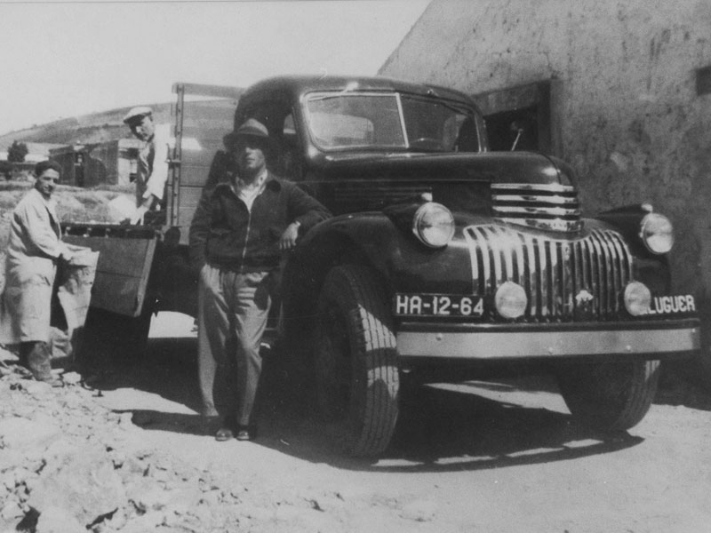

História da Empresa
Fundada em 5 de março de 1999, a Intermodal Log, traça a cada dia um caminho melhor de dedicação e confiabilidade no meio de transporte de cargas. A busca pela qualidade total unida á tecnologia garantem uma completa estrutura para atender tanto o mercado nacional quanto internacional. São mais de 17 anos de dedicação e esforço para garantir um serviço de ótima qualidade e satisfação para seus clientes, Atendemos todo mercado nacional e também realizamos transportes internacionais.
Contamos atualmente com uma frota de 82 veículos próprios e 157 veículos agregados, sendo os veículos próprios todos com baú e cofre e carretas para transporte de produtos da área da saúde em pallets ou estivado (batido) com capacidade para 16, 18, 28 e 30 palets, rastreados via satélite 24h por dia e 7 dias por semana pelos mais seguros e eficazes sistemas de rastreamento e monitoramento de frotas disponíveis no mercado atualmente,, e sensores de temperatura para acompanhamento e controle remoto permanente das condições da mercadoria transportada durante todo o trajeto, tornando a operação 100% segura e eficaz, garantia complementada também pelo seguro total de todas as cargas transportadas através da Cia Mapfre Vera Cruz Seguradora S/A e da Pamcary, empresas estas líderes em seguros, gerenciamento de riscos e informações logísticas no transporte de cargas. Somos especializados no transporte de produtos perecíveis e que necessitam de cuidados especiais e temperatura controlada e de transportes com duração de entrega (Material perecível), e também atendemos os segmentos de carga seca (baú seco e perecível) e containers (porta containers de 20’’ e 40’’ pés). Nosso compromisso com o cliente é cada vez mais reforçado através da busca de soluções para a segurança do que transportamos. Primamos essencialmente pela pontualidade na entrega e qualidade do produto na chegada. Nossa frota de veículos conta com uma idade média de 2 anos e uma estrutura especializada para atender às exigências do mercado nacional e internacional. Uma história em família, construída com muito trabalho e dedicação em busca de um sonho: tornar-se referência no transporte nacional e internacional.

Nossas estruturas
* Os pilares de uma estrutura encorpada para suportar grandes resultados!
* Com rotas em todas as cidades do Brasil, a Intermodal Log possui uma estrutura
* Consolidada que garante o funcionamento de todas as operações:
* Frota própria; 48 Bases e 27 localidades atendidas;
* Representantes em todas as localidades do Brasil;
* Postos avançados no cliente;
* Profissionais treinados;
* Gerenciamento de risco;
* Rastreamento via satélite e GPRS;
* Monitoramento 24h.